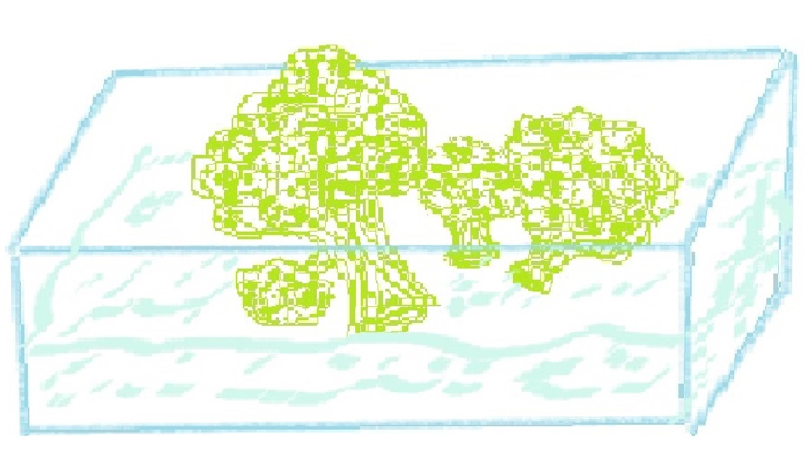

Steamed Broccoli
A very simple dish made of broccoli.
It is very healthy.
Ingredients
- Broccoli leaves (10 pieces)
- Clean water(1 cup)
- Salt (1/4 of a teaspoon)
Recipe instructions (learned from a friend)
- Rinse the broccloi leaves.
- Pour clean water into a microwaveable dish with 1 cm deapness of water!
- Put broccoli leaves into the dish with water.
- Add salt into the dish with water and broccoli.
- Cover the top of the dish with a wet paper towel list so it covers the top of the dish .
- Put the dish into the microwave and microwave it for 3-4 minutes.
- Take out the dish out of the microwave and let it stay for 3-5 minutes.
- Open the paper paper towel cover and enjoy the steamed broccoli.
Return to top
Return to main page